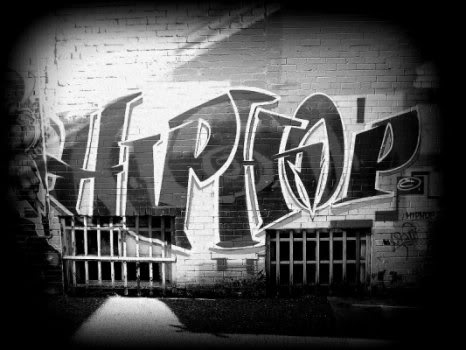
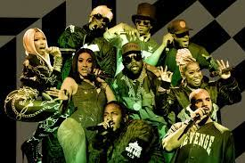
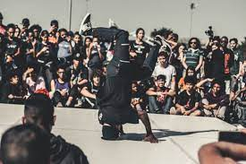

Introduction
Hip hop music is a dynamic and influential genre that originated in the African-American and Latino communities of the Bronx, New York City, during the 1970s. It quickly evolved into a global cultural phenomenon, encompassing not only music but also dance, art, fashion, and a unique way of life. At its core, hip hop is more than just a style of music; it is a powerful form of self-expression that reflects the struggles, triumphs, and experiences of urban life. Rooted in the context of social and political issues, hip hop serves as a platform for marginalized voices to be heard and has become an essential aspect of modern popular culture.
History
The history of hip hop music is a fascinating journey that emerged from the streets of the Bronx, New York, during the 1970s. Rooted in African-American and Latino cultures, hip hop has grown from a local phenomenon to a global cultural movement, shaping music, fashion, dance, and societal expression.
Origins in the Bronx:
Hip hop's roots can be traced back to the economically disadvantaged neighborhoods of the South Bronx in the 1970s. The socio-economic conditions, poverty, and gang culture prevalent in the area led to a sense of frustration and the need for an outlet of self-expression.
The Birth of DJ Kool Herc:
Clive Campbell, also known as DJ Kool Herc, is often credited as one of the pioneers of hip hop. In 1973, Herc hosted a back-to-school party where he utilized two turntables to extend the instrumental breaks of songs, known as "breakbeats." This technique, known as "breakbeat DJing," laid the foundation for hip hop's musical style.
Famous Artists
Hip hop boasts an array of famous artists who have become cultural icons and trailblazers within the genre. Among them, Tupac Shakur, known for his powerful and introspective lyrics, remains an enduring figure whose impact on hip hop and society transcends time. The Notorious B.I.G., with his distinctive flow and storytelling ability, is revered as one of the greatest lyricists of all time. Jay-Z's entrepreneurial prowess and musical artistry have earned him legendary status, while Eminem's raw and emotional delivery has made him a globally recognized force in hip hop. These influential artists, along with many others, have shaped the landscape of hip hop and continue to inspire aspiring musicians worldwide.
Hip Hop Culture
Hip hop culture is a vibrant and dynamic movement that encompasses music, dance, art, fashion, and a distinct way of life. Emerging from the streets of the Bronx, New York, in the 1970s, it quickly became a powerful form of expression for urban youth. At its core, hip hop culture emphasizes creativity, authenticity, and self-empowerment. The music serves as a platform to voice the struggles and triumphs of marginalized communities, while dance (breaking) showcases athleticism and individuality. Graffiti art, with its bold and colorful designs, adorns walls as visual storytelling. Hip hop fashion, with its unique styles and streetwear influence, has transcended into mainstream fashion. More than just a genre, hip hop culture has become a global phenomenon, shaping the identity of millions and inspiring social change.
